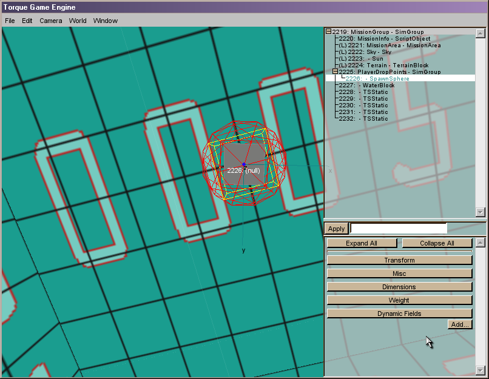
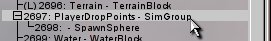
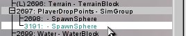
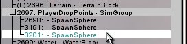
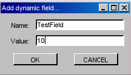
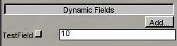

Starting The Inspector
- Start the Mission Editor by pressing F11.
- Start the Manipulator by pressing F3.
Examining The Inspector
The Inspector tool allows you to select an object and manipulate all of its script-exposed parameters via text boxes, spinners, radio-buttons, checkboxes, etc. These parameters will vary based on the object. Later in this guide, we will examine specific parameters for water, terrain, the character, the sky, etc. Now, for the purpose of learning about this tool, we will work with a simpler object, namely the SpawnSphere. The purpose of this object is unimportant at this time. The key thing is that it is easily located and manipulated.
To begin, look directly overhead. You should see a gray object. Select it and you should have a view similar to this:

Taking a quick inventory of the screen elements, we see the World Editor Menu at the top, the 3D World-View window which takes up nearly two-thirds of the screen, the World Editor Tree window in the upper right, and finally the World Editor Inspector window in the lower right.
World Editor Tree
Before we jump into the relatively straightforward World Editor Inspector let's discuss the World Editor Tree and some important organization features it provides.
First, expand the list in the World Editor Tree Window. The initial list is completely collapsed which doesn't do us a lot of good when we're trying to manipulate objects.
SimGroups
At this point, you may be asking, what is a SimGroup? Subsequent chapters in the Tech School section will get into the nitty gritty details about SimGroups, SimSets, and SimObjects. For now we'll simply describe SimGroups as a means by which the engine organizes objects. This is both useful from a organization sense, i.e. knowing where to find things while you are editing, and equally useful, for scripting purposes. By pre-defining a consistent set of SimGroups and by organizing your objects within them, your current job as a mission/level designer will be greatly simplified. Your script writers will thank you too. If that is your job to, then pat yourself on the back. Good Job!
As can be seen from the current view of the World Editor Tree SimGroups can be nested within SimGroups as well as can particular entities (SimObjects). In fact, every mission entity is present in this list and will be found nested within a SimGroup.
So, how exactly do we place objects within a SimGroup? Let's find out. First, make a duplicate copy of the SpawnSphere. We already have it selected, so all you need to do is type: CTRL + C (to copy) followed by CTRL + V (to paste). Alternately, you can use the Edit Menu ? Copy/Paste operations.
Now that you've created a new SpawnSphere, you need to locate it in the World Editor Tree.
Hmm? If you've followed the instructions above, you will find the new SpawnSphere at the bottom of the tree. Hmmm, now we would much rather have it in the PlayerDropPoints - SimGroup with the rest of the SpawnSpheres. So, let's manually move this one to the correct spot and then learn how to place objects in the right SimGroup the first time.
Moving Existing Objects Into A SimGroup (Add-Group or Instant Group)
The new SpawnSphere should already be selected, but if it isn't, please click on it to select it. Now, use the slider on the right side of the World Editor Tree Window and find the PlayerDropsPoints-SimGroup. Select this as the Add-Group through the key/mouse combination: ALT + RightClick. The Add-Group should now be selected with a gray background:

Now, select the menu item: World -> Add Selection to Instant Group. Viola! The SpawnSphere is in the PlayerDropPoints - SimGroup.

Creating Objects in a Pre-existing SimGroup(Add-Group)
OK, so that was a hassle. How do we get objects to place in the correct SimGroup when we create them? Simple. You already have a SpawnSphere in your copy-buffer and you already have the Add-Group selected (see above). Paste another Spawn sphere and it should show up in the PlayerDropPoints - SimGroup. Easy as pie! The trick to select your instant group before pasting objects and they will automatically be placed in that SimGroup.

World Editor Key Stroke/Mousing List
Here is a summary of operations you make do on SimGroups and Objects with the mouse and key combinations.

World Editor Inspector Window
OK, now let's address the World Editor Inspector. This is of course, the window from which this tool gets its name. The purpose of this window is to allow you to inspect and modify parameters for individual objects. If you play around a bit and click on different objects, you will begin to see that different object types have different parameters. For now, we'll address the more common values, adding new values, and finish off with some tips on using the interface effectively. We will leave a detailed inspection of individual objects' parameters for the Specific Mission Objects chapter in Tech School.
Inspector - Common Fields
By far, the most common fields are:
-
Position (X,Y,Z) - Three floating point values representing the coordinates of the selected object in world space.
-
Rotation (Xm,Ym,Zm,A) - Four floating point values where the first three are multipliers and the fourth value is the angle (in degrees) of the rotation(s).
-
Example: rotation 0 1 0 90.0 means the object is rotated 90 degrees about the y-axis, relative to the world-axis.
-
-
Scale (Xm,Ym,Zm) - Three floating point values representing a relative scaling. The values act as multipliers of the object's default dimension(s) in the indicated axes.
-
Example: scale 1 1 2 means that this object will be twice as tall as the default when loaded into the world.
-
Note: These values correspond indirectly to those you see when mouse-scaling. Mouse scaling values are actual world dimension.
-
-
shapeName (shapes only) - This parameter's name is a misnomer. It actually gives the relative path and filename of the selected shape.
-
interiorFile (interiors only) - This parameter gives the relative path and filename of the selected interior.
-
Object Name - There isn't actually a parameter tag for Object Name, but there is an editable text-field for it. The text-field is located to the right of the Apply button (see image below). You can type just about anything (no spaces allowed, so my text in the illustration is bad.) in this field and click apply to name your object. Note: Objects can be given the same name. We'll leave further discussion of object naming for a later chapter. Just remember, this is how you change it from the inspector.
Object Name Field
Inspector - Dynamic Fields
I won't explain what dynamic fields are yet, but rather explain a way they can be added. I will however say that dynamic fields are an important feature related to scripting and that you are very likely to use them. That said,
-
To Add a Dynamic Field
-
Select the object which you wish to add a field to.
-
Click the ADD button found in the Dynamic Fields section of the world editor inspector window.
-
In the dialog pops up (below), give the field a meaningful and unique name and an initial value.
-

-
To modify the value of a Dynamic Field
-
Same as changing the value of any other field. Just modify the contents of the text-field next to the Dynamic Field name and click APPLY.
-
-
To delete the Dynamic Field
-
Click on the check-box next to the Dynamic field (see picture below) and the field will be removed permanently. This cannot be undone.
-
